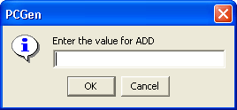

The Levels Tab is used to add the special class abilities gained and determine at what level the character gets them.
The main window shows the list of allocated abilities.
To add a new ability enter the level it is gained at, select the Tag Type and then Click Add.
Enter the value of the bonus in the dialog box that appears

If you wish to delete an ability. Select it in the main window and then click the Remove button.
The Cancel and Save buttons, which appear on every tab, are used to either cancel the Class creation or save it to the customClasses.lst file.